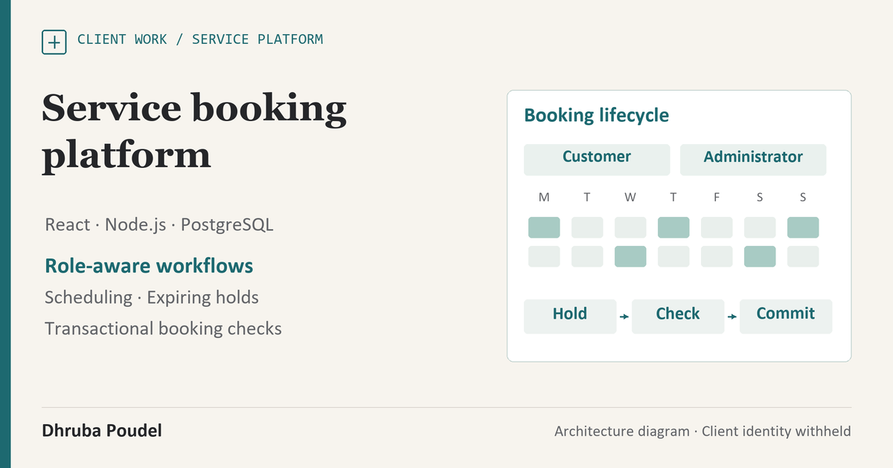

Client work · Identity withheld
Service Booking Platform
A clear public service journey, backed by explicit scheduling and access rules.
- Contribution
- Responsive interfaces, booking rules, testing and controlled release preparation.
- Engineering focus
- Consistency across availability, identity and repeated requests.
- Evidence
- Dated release and scheduling checks, with the acceptance boundary stated.

Connect a service choice with the rules behind a booking.
A service website needs to explain the offer clearly. A booking platform also needs to understand availability, account responsibilities and the consequences of two people choosing the same time.
I designed and developed the responsive public website and the application foundations behind its customer, service-provider and administration workflows. This case describes the technical contribution with the client identity withheld.
Put permissions and consistency behind the interface.
Reusable React interfaces support public information and role-aware workspaces. Supabase supplies identity and controlled data access; PostgreSQL functions, constraints and row-level policies enforce the underlying ownership and scheduling rules. Separate Node.js handlers support delivery work.
One event can outlive one request
An append-only ledger records balance changes, while an outbox records notification intent. The design separates committing a business event from attempting delivery, with idempotency controls for repeated processing. Provider acceptance and actual recipient delivery require their own checks.
Treat a booking as a validated transition.
In a fictional example, two customers select the same appointment. A short-lived hold helps the interaction, but the final operation still rechecks the selected time and commits it consistently.
I implemented expiring holds, transactional slot locking and a provider-overlap constraint. Selection checks cover duplicate slots, mixed providers, closed or elapsed dates and active booking conflicts. Recurring appointments use Sydney wall time across daylight saving.
- Competing requests
- Recheck availability within the final database transaction.
- Time and recurrence
- Apply local scheduling rules across clock changes and preserve closure exceptions.
- Invalid selections
- Return a clear conflict result while leaving the booking state consistent.
- Release path
- Use an isolated staging checkpoint and preserve a recovery route for the previous public site.
The architecture illustration uses fictional labels. It does not show a customer account, production database or a completed live transaction.
Keep release and test evidence tied to their dates.
- Public website
- A retained 9 October 2026 release record documents the main-domain launch and selected availability/login checks. The public homepage was reviewed on 26 October.
- Scheduling checks
- Two domain suites passed 14 tests on 27 October 2026, covering daylight-saving transitions, closures, recurrence conflicts and price allocation.
- Earlier release record
- The 9 October handoff reports 230 passing checks. That complete release suite was not rerun for this portfolio update.
- Database checkpoint
- An isolated staging record documents migrations and role-scoped access checks using synthetic fixtures. Staging is part of this project, not an additional product.
Current delivery stage
The public website is live. Complete signed-in operational journeys, actual notification receipt and owner acceptance remain separate milestones. No measured conversion, revenue or time-saving result is claimed.
Show the engineering without exposing the client.
The public case uses generic diagrams and a contribution summary. Client names, logos, direct domains and identifiable website images are withheld; source code and operational records remain private.
Live card-payment acceptance and automatic calendar synchronisation are not claimed. A useful next acceptance run follows an approved synthetic booking through confirmation, a change or cancellation, and actual test-recipient notification receipt.